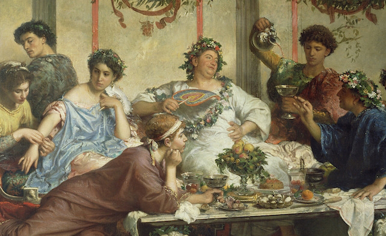
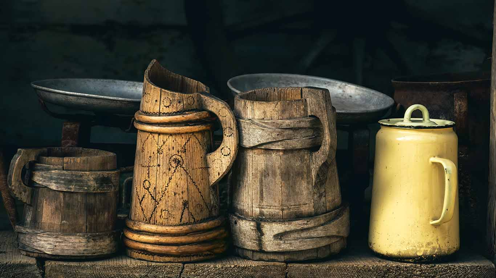
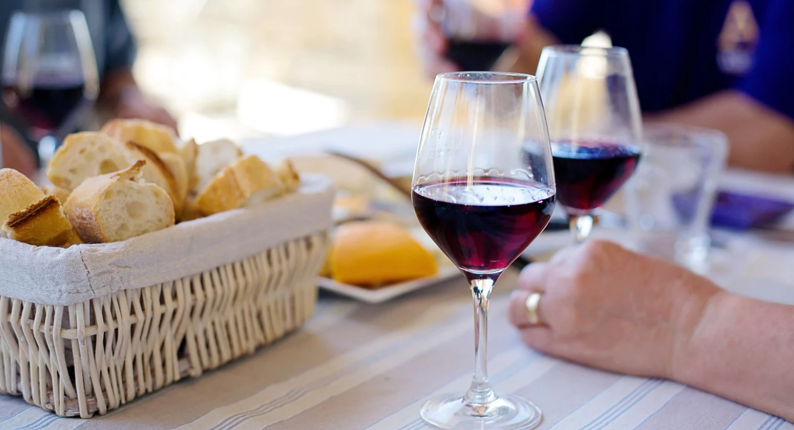
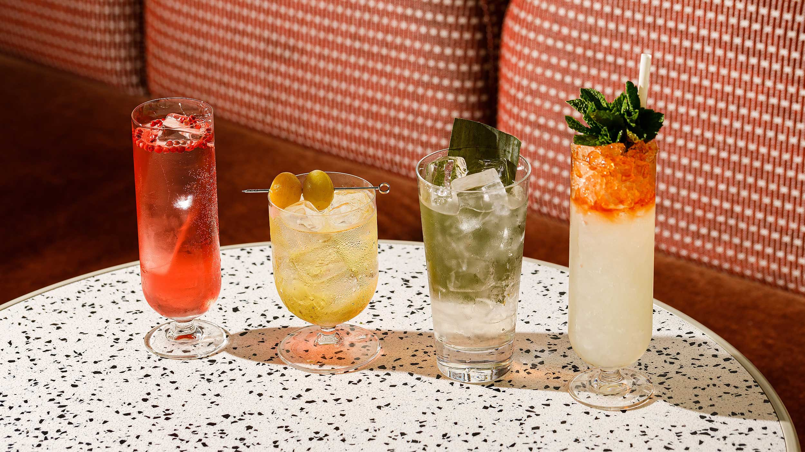
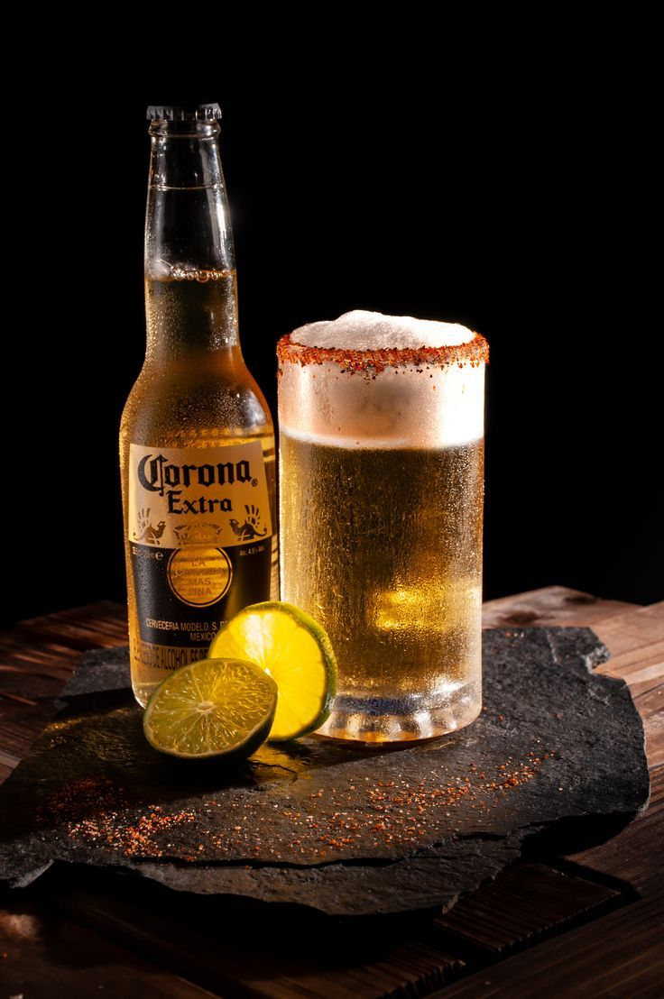
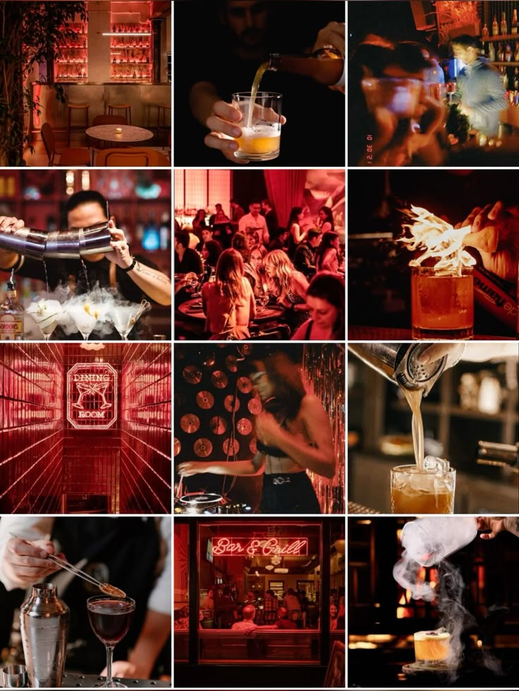

El vino en la historia: de los banquetes romanos a tu copa
Dec 7, 2017
El vino ha acompañado a la humanidad por milenios. Desde rituales religiosos en Egipto hasta celebraciones imperiales en Roma, ha sido símbolo de comunión, arte y cultura...
La cerveza en civilizaciones antiguas
Sep 2, 2017
No siempre fue un acompañante de fútbol: en Sumeria y Babilonia, la cerveza era sagrada. Te contamos cómo surgió y por qué era incluso parte del salario.
Cómo elegir el vino ideal para cada ocasión
Oct 2, 2017
¿Tinto o blanco? ¿Espumoso o seco? Esta guía te ayudará a entender qué vino se adapta mejor a cenas, celebraciones o momentos de relax.
El vaso sí importa: cristalería para cada tipo de bebida
Nov 9, 2017
Cada copa realza el sabor de manera distinta. Descubre qué tipo de vaso usar para vinos, cócteles, whisky o cerveza.
5 cócteles clásicos que debes probar al menos una vez
Dec 12, 2017

Desde el Negroni hasta el Old Fashioned, estos tragos han marcado historia por su sabor y carácter. Aprende a prepararlos paso a paso.
About Me
Soy un apasionado de la historia del vino y su cultura. En este blog comparto curiosidades, recetas, y reflexiones sobre cómo una bebida puede conectar generaciones.
Galeria
Frase destacada del día
“Donde no hay vino, no hay amor.” – Eurípides